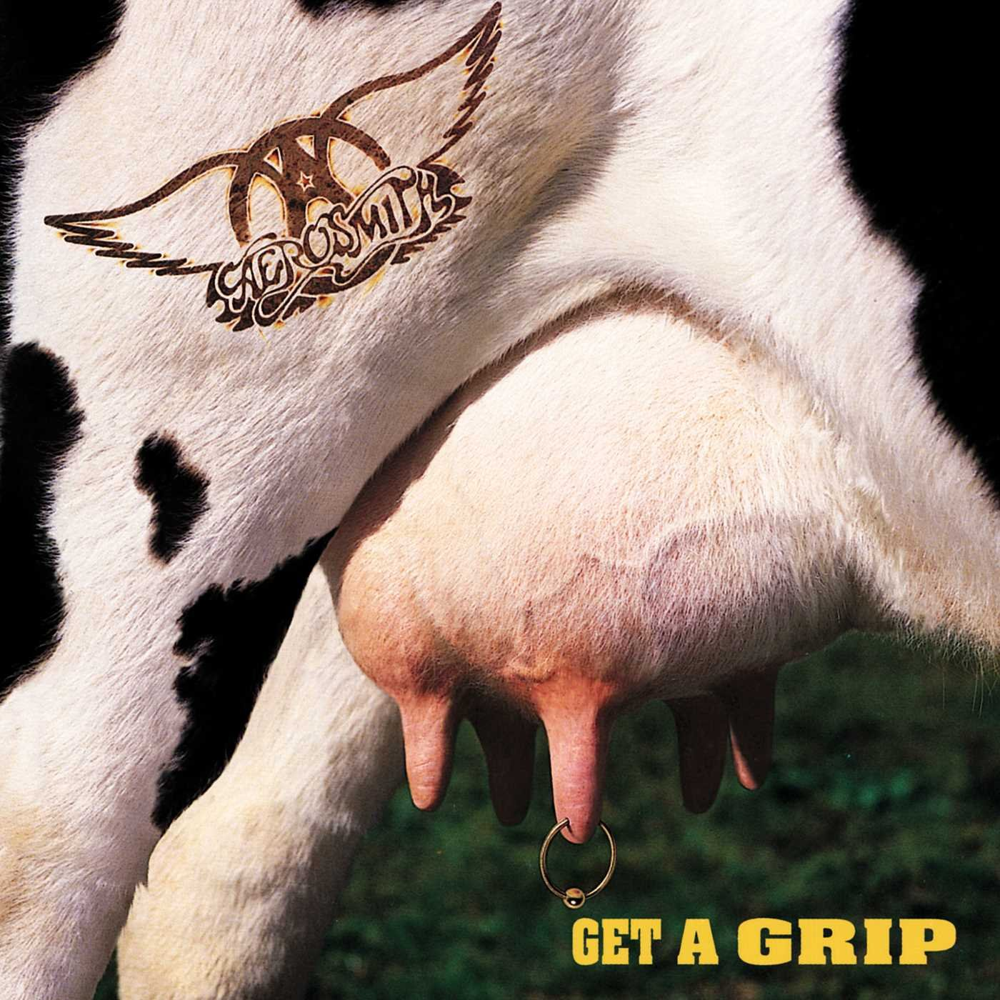

Genero Musical Rock
El rock, uno de los géneros musicales más influyentes y populares de la historia.
El rock ha sido una influencia importante en muchos géneros musicales, incluyendo el pop y el hip hop. En términos de pop, la música rock ha sido una fuente de inspiración en cuanto a la estructura de las canciones y la instrumentación, y muchos artistas pop han incorporado elementos de rock en su música. Por ejemplo, algunas canciones pop pueden incluir guitarras eléctricas y baterías con un sonido más rockero para darle un toque más dinámico y enérgico.
El rock ha tenido un impacto significativo en la cultura popular, y ha sido influenciado por y ha influido en la moda, el arte, la literatura y otros aspectos de la cultura. Muchos artistas y bandas de rock se han convertido en iconos culturales, y su música ha resonado con generaciones enteras de fans.
El rock clásico se refiere al período temprano del rock and roll, que se desarrolló en la década de 1950 y se extendió hasta la década de 1980.

The Beatles una de las mejores bandas,la cual lanzo varias canciones que se convirtieron en himnos que siguen siendo populares hasta el día de hoy. La banda también fue de las primeras en hacer experimentación musical, incorporando nuevos sonidos y técnicas de grabación en sus álbumes, lo que inspiró a muchos otros artistas a seguir su ejemplo y creando nuevas bandas
Algunas Canciones buenas de los Beatles son:
-Something: del Album Abbey Road, el cual considero como su ultimo album, lo mejor a resaltar es el aspecto más notables de la canción, que es la melodía, la cual es simple pero increible junto a los vocales de Harrison
-A Day in the Life: Es una de esas canciones que comienza con un ritmo suave y melancólico, que a medida que van pasando los minutos se va tornando mas psicodelico y haciendo cambios de ritmo constantemente, quiza un sonido que no a todos les guste pero si uno esta abierto a escuchar sonidos nuevos, es una de las mejores piezas de los Beatles.
-Do You Want to Know a Secret: De sus primeras canciones, una cancion sencilla sin ritmos psicodelicos, que en Spotify se encuentra como pista estereo, asi que se puede apreciar mas el instrumental y la voz de Harrison.
-For You Blue: La version Naked de Let it Be, un estilo sencillo donde se destacada el estilo marcado de blues clásico.
-Happiness Is a Warn gun: De su iconico Album blanco, una pieza que comienza un ritmo acústico tranquilo, que da paso a una sección de rock más pesada con una guitarra eléctrica distorsionada y una bateria bastante compleja Ringo, cuenta con toque de Jazz y con Saxofon que lo hace bastante disfrutable.
Pink Floyd, una banda la cual es conocida por sus innovadoras composiciones musicales, letras introspectivas y experimentales, esta banda cuenta con uno de los mejores álbumes de la historia de la música, ya que este fue clasificado asi por las composiciones de "The Dark Side of the Moon".
-Wish You Were Here: Una cancion balada, tiene una melodía suave y su letra resulta conmovedora, esta cancion tiene uno de los mejores solos de guitarra
-Pigs: Una canción desafiante y políticamente cargada que muestra un lado oscuro y crítico, nos encontramos con una poderosa melodía de rock progresivo. El solo de guitarra de Gilmour es impresionante, dandole un toque unico.
-Mother: Cancion que comienza con una guitarra acustica y va creando ambiente posterior con orquesta y un coro dando como resultado un balance increible entre letra y melodia.
Ozzy, aparte de ser conocido como el principe de las tinieblas es conocido como el "Padrino del Metal" debido a su influencia y contribución al desarrollo del género, Ozzy fue el vocalista de la legendaria banda de heavy metal Black Sabbath
-Flying High Again: Tiene un riff de guitarra, a mi parecer uno que aparte de ser potente, resulta ser pegadizo, así como el estribillo, que se queda bastante grabado
-Mama, I'm Coming Home: Un cambio al estilo de Ozzy, ya que se trata de una balada, la hace una cancion "facil" de escuchar para cualquier persona, por su ritmo suave y memorable
-Road to Nowhere: Del mismo album que la cancion anterior presenta un ritmo no tan balada pero no tan metal, con la iconica voz de Ozzy
mi perro se llama asi por el v:
Metallica, uno de los grupos más influyentes e icónicos del género, conocidos por sus exitosos albumes "Master of Puppets" y "The Black Album" que presentan un estilo "agresivo"
Uno de los mejores albumes de Metallica es Ride the Lightning, conciderado un abum de thrash metal que cuenta como base con ritmos rápidos y "agresivos", con guitarras potentes y baterías que se distinguen claramente en las pistas, el otro album que mas me gusta de Metallica se trata de ...And Justice for All, se caracteriza por tener un gran énfasis en la composición y la experimentación musical, con canciones más largas y complejas
Fade to Black: A pesar de que se la puede considerar Balada para el estilo de Metallica, las guitarras son lo que le dan esa magia al tema, haciendo que esos casi 7 min que dura sean bastante disfrutables
Trapped Under Ice: Esta cancion ya tiene el sonido pesado y una velocidad vertiginosa en los riffs de guitarra, la batería y los distintos solos
Dentro de los albumes que se disfruta de escuchar de Metallica, uno recomendado seria Garage INC, apesar que es un album que se trataria en mayoría de ellas versiones de canciones de otras bandas que Metallica admira y han sido influencias para ellos, sus interpretaciones son incleibles como:
Tuesdays gone, que es originalmente de Lynyrd Skynyrd, la mezcla entre el ritmo sureño y el estilo de metallica es algo increible, tambien mencionar Whiskey in the Jar y Astronomy
Es considerada una de las bandas más influyentes de la historia del rock, sus canciones siendo una mezcla entre una mezcla de hard rock, blues y rock clasico
-Crying: Se podria considerar una especie de balada , destaca bastante la melodia con guitarras eléctricas melódicas y los solos
-Hole in My Soul: La canción tiene un enfoque más melódico en comparación con algunas de las canciones más duras de Aerosmith y cuenta con bastantes mas toques de influenciada por el blues rock que de hard rock pero aun asi se nota.
-Livin' on the Edge: Como gran parte de las canciones de Aero, lo mas memorable de la cancion es su potente riff de guitarra y su memorable coro
Get A Grip es uno de los mejores albumes, por lo menos para comenzar a escuchar a Aerosmith.

Guns N' Roses es una banda icónica del rock de los años 80 y 90 que mezcla el hard rock, el heavy metal y el rock alternativo en su sonido
Since I Don't Have You:Una balada que Guns N' Roses versionó en 1993 con un enfoque más rockero siendo la primera cancion de su album The Spaghetti incident.
You Ain't the First: canción de ritmo rápido y pegadizo que aparece en el álbum "Use Your Illusion I", el de la portada amarrilla con rojo, junto con las otras canciones de este album tiene su propia escencia que la hace increible.
Knocking on Heaven's Door: Una cancion originalmente escirta por Bob Dylan, uno que podria conciderarse uno de los mejores en la musica trajo este tema el cual fue reversionado por los guns con su propio estilo, aportando una melodia de rock que se te queda pegada, es una de las canciones que llevo mucho escuchando y nunca me aburro.
Ain't It Fun: Una canción de punk rock y funk rock que aparece en el álbum "the Spaghetti Incident y cuenta con la participación de la cantante punk Patti Smith
It's So Easy: si te gustan los riff de guitarra distintivos, es una cancion que deberias escuchar.
rock alternativo es un subgénero del rock que surgió a finales de los años 80 y principios de los 90 como una alternativa al rock convencional, se caracteriza por que mezcla distintos estilos musicales, incluyendo el punk, el indie rock, el grunge, el pop, el blues y el heavy metal.
Algunos de las bandas que podriamos contar como los "padres" del alternativo, ya que aun que no sean propios del genero, tienen varias canciones y proyectos que le deieron inicio a este, las bandas son:
Nirvana, Pearl Jam, Radiohead, Weezer, Red Hot Chili Peppers,

Los Strokes son una banda de rock alternativo, estilo minimalista y su sonido influenciado por el post-punk y el garage rock
Como opinion personal v: y en mi perspectiva puedo decir que sus mejores albums se tratan de Room on Fire, lanzado en 2003 y trae unas melodias más complejas y estructuradas, con canciones como "12:51" y "Reptilia", pasando asi a The New Abnormal, es un álbum fascinante y una obra maestra del rock alternativo moderno. La banda ha mantenido su sonido característico en este álbum, pero con un giro fresco y moderno a su estilo sólido y emocionante, vale la pena escuchar y disfrutar en su totalidad, dando su cierre con Ode to the Mets.
Ode to the mets es de esas canciones que trae esa sensacion nostálgica que se crea a lo largo de la canción, las capas de teclado, con una guitarra eléctrica suave y algunos sintetizadores, la bateria que tiene el ritmo mas simple que puede tener una bateria pero le brinda esa magia a la cancion y destacar que se puede sentir el bajo incleiblemente
Si eres de las personas que les gusta poner atencion a las letras, esta cancion tambien remata en esto
Oasis es una de esas bandas que puede hacerte vibrar con cada canción. Si aún no has tenido el placer de escucharlos, prepárate para un viaje musical lleno de emociones, guitarras estridentes y voces.
Si, Oasis son mas que wonderwall, que vale recalcar que es buena v:, si escuchas el album completo What's the Story Morning Glory? te vas a encontrar con verdaderas joyas como Don't Look Back in Anger con la melodía de guitarra de la canción es un ejemplo del sonido distintivo de Oasis, Some Might Say con una guitarra y letra que se pega facil, tambien podemos encontrarnos con Morning Glory, con un riff de guitarra pegadizo antes de explotar en un estribillo increible
Otro de sus buenos albumes se trata de Definitely Maybe, donde nos presentan canciones como Live Forever, Supersonic y Cigarettes & Alcohol, si vale la pena escucharlos.

Hay una gran chance de que escucharas su cancion mas escuchada Those Eyes, New West es una banda que ha surgido de las profundidades del blues rock y el rock psicodélico.
Se trata de una banda practicamente nueva, no cuenta con un album mas que una recopilacion de sus singles 2020-2021, te hace sentir una conexión emocional única con las canciones.Si aún no has escuchado a New West, te estás perdiendo una de las bandas más emocionantes y que podria llegar a ser una banda bastante conocida
Actualmente los escucho con bastante frecuencia, si vale la pena cuando quieres algo mas relado de escuchar, al menos hablando ritmicamente"
Five Miles High, Home, Uneasy, 27, 2020, We've been Fighting for miles, Kids Who stole the world, In good time

Aca algunas canciones que pueden ser una base para escuchar de cada genero de rock presentado v:
- Come together- The Beatles
- In my life- The Beatles
- Long, long, long- The Beatles
- Dazed and Confused- Led Zeppelin
- Stairway to Heaven- Led Zeppelin
- The wind cries Mary- Jimi Hendrix
- Blowin' in the wind- Bob dylan
- Hotel California- The aegles
- Bennie and the jets- Elton John
- I wanna be sedated - Ramones
- Carry on my wayward Son- Kansas
- Dust in the wind- Kansas
- Somebody to love- Queen
- You take my Breath away- Queen
- Beast of burden- Rolling Stones
- Simple Plan- Lynyrd Skynyrd
C-Clasicos
- Paranoid - Black Sabbath
- The devil in I - Slipknot
- Before I forget - Slipknot
- Crazy Train- Ozzy Osbourne
- Der Untermensch- Type O negative
- Angel of death- Slayer
- Cowboys from Hell- Pantera
- Figth fire with fire - Metallica
- Ride the Lightning - Metallica
- Am I evil - Metallica
- Form Whom the bell tolls - Metallica
- Figth fire with fire - Metallica
- Seek and destroy - Metallica
- Jump in the fire - Metallica
- Phantom lord - Metallica
- Holy diver - Dio
C-Metal
- Life goes On- Poison
- Looking for love- The Whitesnake
- Here I go Again- The Whitesnake
- Just take my heart- Mr.Big
- Angel- Aerosmith
- Permanent Vacation- Aerosmith
- Last Kiss- Pearl Jam
- Yellow Ledbetter- Pearl Jam
- Heartbreaker- Pat Benatar
- Living on the prayer - Bon jovi
- Breaking the law- Judas priest
- Raw power- Guns N Roses
- Yesterdays- Guns N Roses
- Nightrain- Guns N Roses
- Always Somewhere- Scorpions
- I hate myself for loving you- Joan Jett
- Mama- My Chemical Romance
- Devils bleeding crown- Voltbeat
C-Hard
- Arabella - Arctic Monkeys
- No Buses - Arctic Monkeys
- Reckless Serenade - Arctic Monkeys
- Why are sundays so Depressing - Strokes
- Snow - Red Hot Chili Peppers
- She's Electric- Oasis
- Apt.4- Vacation Manor
- Dancing in the moonlight-Toploader
- Kilby Girl - Backseat Lovers
- Five miles High - New West
- This little Story - New West
- Sweet Dreams, TN - Last shadow puppet
- End of it - Friday Pilots club
- Read your diary - Maneskin
- Jesus of suburbia - Green day
- Costa del silencio- Mago de Oz
- Traicionero - Laberiso
- Ma#ana - Laberiso
C-Alternativo
Si me pongo a presentarte buenos albumes nos vamos a pasar una vida aca :v, asi que te voy a presentar MIS albumes favoritos, es a criterio mio y no tiene por que gustarte, pero si quieres darles una oportunidad son brutales:
- Beatles
- Abbey Road
- Beatles
- White Album

- Metallica
- Ride the Lightning

- Strokes
- New Abnormal

- Led Zeppelin
- IV

- Black Sabbath
- Paranoid

-

- Aerosmith
- Get a Grip
- Nirvana
- Unplugged

- Arctic Monkeys
- whatever people

- Beatles
- White Album
- Pink Floyd
- Wish you were here

- La Beriso
- Historias

- Scorpions
- Crazy World
- Def Leppard
- Pyromania
- Oasis
- what's the story
- New West
- Singles 2020-2021
Recuerdos Musicales
"Nostalgia musical 80 y 90."
Artistas icónicos de los 80 y 90.
"Época dorada de la música Pop, Rock, HipHop".
Contenido Exclusivo
"Entrevista con los artistas"